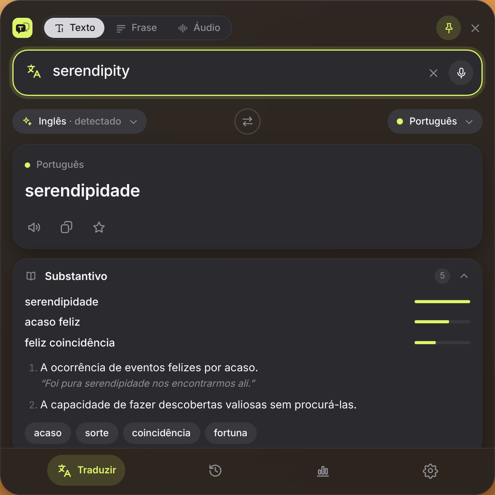
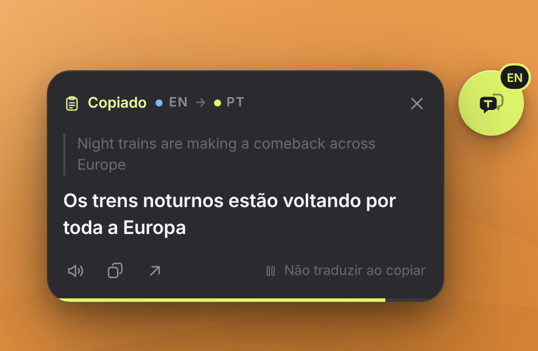
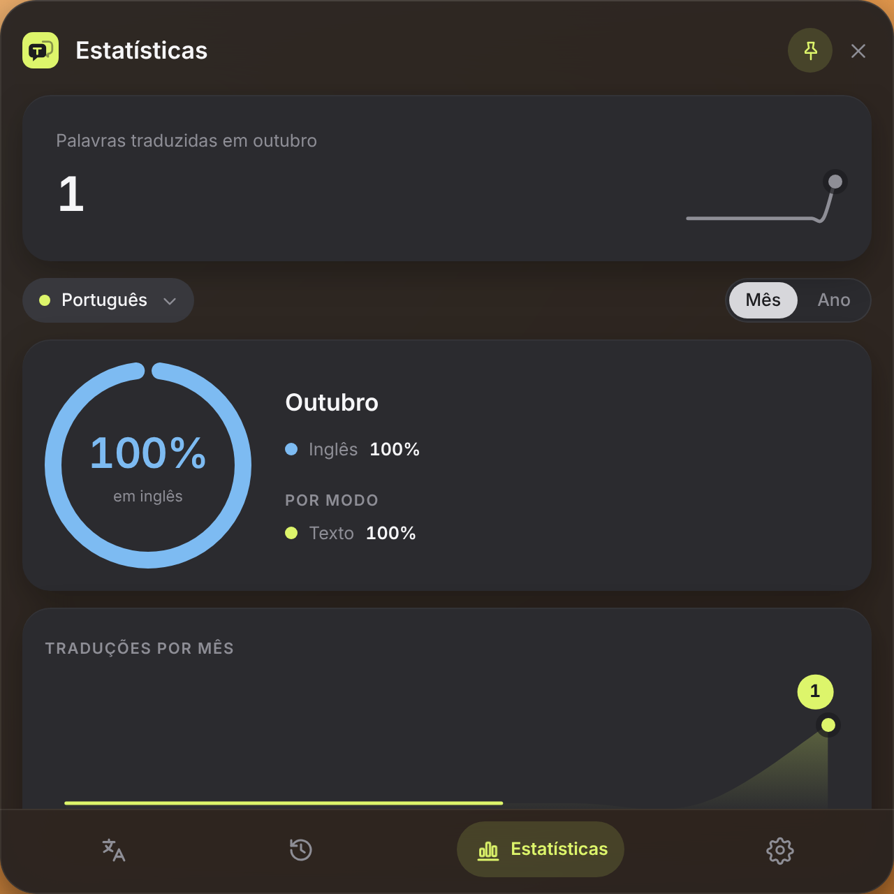

Traduza sem sair do que você está fazendo.
Aperte Ctrl Shift Espaço e a tradução aparece por cima de qualquer app. Copiou um texto em inglês? A bolha traduz sozinha.
Windows 10+, macOS 12+ e Linux. 7 dias de Pro grátis na primeira execução.
Feito para não atrapalhar.
O Transly mora na bandeja. Aparece quando você chama e some com Esc, sem trocar de janela nem abrir o navegador.
Um atalho, qualquer app
A janela abre no terço de cima da tela com o foco no campo. Digite e a tradução chega enquanto você escreve.
Palavras com dicionário
Outras traduções, definições, exemplos e sinônimos clicáveis. "Você quis dizer" corrige o que foi digitado errado.
Frases e e-mails inteiros
Até 5.000 caracteres, com romanização para japonês, coreano e chinês. Ouça, copie ou guarde nos favoritos.

Copiou, traduziu.
A bolha fica num canto da tela. Quando você copia um texto em outro idioma, ela mostra a tradução para o seu por alguns segundos, sem tirar o foco do app em que você está.
- Texto que já está no seu idioma é ignorado e não sai do computador.
- Arraste para onde quiser; ela gruda na borda e lembra a posição.
- Ajuste a transparência ou pause com um clique direito.

Fale, ouça, acompanhe.
No modo Áudio o Transly transcreve o que ouve em trechos com horário e traduz cada um. O Histórico guarda tudo por dia e as Estatísticas mostram quanto e de quais idiomas você traduz.
- Transcrição com a sua chave da OpenAI, da Groq ou um servidor local.
- Histórico e estatísticas ficam só no seu computador.
- Exporte para CSV e use no Excel ou no Anki.
Grátis para o dia a dia. Pro para sempre.
Sem assinatura: o Pro é um pagamento único.
- Texto e Frase sem limite
- Dicionário, ouvir, histórico e favoritos
- Bolha: 20 traduções por dia
- Estatísticas do mês
- Tudo do Free
- Bolha sem limite diário
- Modo Áudio: transcrição e tradução por trechos
- DeepL com a sua chave
- Exportar CSV e estatísticas do ano
- Até 3 computadores
Baixe o Transly.
Grátis para Windows, macOS e Linux. O Pro é ativado dentro do app, com a mesma instalação.
Windows
Windows 10 ou mais novo, 64 bits
macOS
macOS 12 ou mais novo
Linux
x86_64; AppImage roda em qualquer distribuição
Versões anteriores
Perguntas
Como ativo o Pro depois de comprar?
A chave chega no seu e-mail. No Transly, abra Ajustes → Plano, cole a chave e clique em Ativar.
O que acontece com o que eu copio?
O Transly detecta o idioma no seu computador. Texto que já está no idioma de destino é ignorado e não sai da máquina; o resto vai para o serviço de tradução e não fica guardado em lugar nenhum além do seu Histórico. Desligue "Traduzir ao copiar" para a bolha parar de olhar a área de transferência.
Funciona sem internet?
A tradução precisa de internet. O Histórico, os favoritos e o Pro (por até 30 dias) continuam funcionando offline.
Posso usar em mais de um computador?
Sim, a chave do Pro ativa até 3 computadores. Para trocar de máquina, use "Desativar nesta máquina" em Ajustes → Plano.